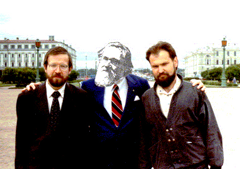

...often linger across Champ des Mars during the White Nights in Summer in sub-polar St. Petersburg, Russia.
In Autumn, Winter and Spring both Andrew Vasiliev, M.D., Ph.D. and Leonid Churilov, M.D., Ph.D. teach Immunology and Pathology at the St. Petersburg State Pediatric Medical Academy, write interactive textbooks, paperbacks, papers, etc.
They both chase one wench called Immun O'Logia, but in vain: she is only true to Ilia I. Mechnikoff who is already the Nobel Prize Winner and a Patriarch of Immunology.
Although the authors have chiseled the Textbook practically without any external aid, they would like however to thank some people who have done a lot to inspire some of the ideas, gave advises (sometimes unwanted), supported the authors while in despair, received thunderbolts of discontent from the authors, resolved some foolish jams and bugs, etc., or just because they are good friends:
...and some other ones whom we were tired enough to forget to mention... sorry!